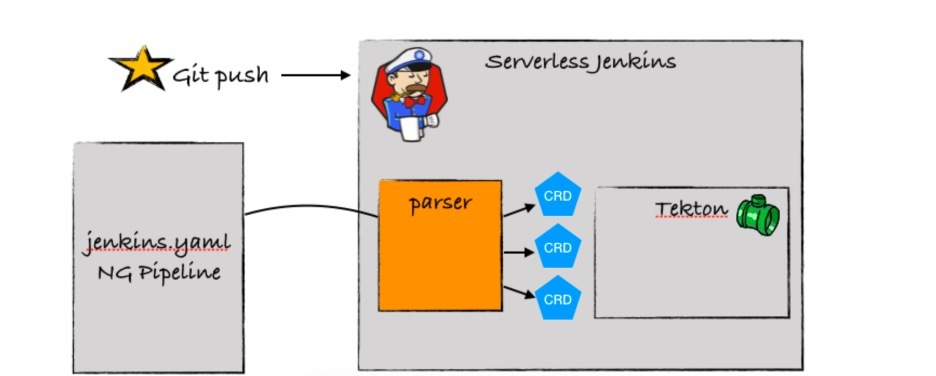

云原生应用时代的平台思考 Jenkins X
最近几年，相信你一定从各种场合听到过“云原生”这个词。比如云原生应用的12 要素、最近大火的现象级技术 Docker，以及容器编排技术 Kubernetes。其中，Kubernetes 背后的 CNCF，也就是云原生应用基金会，也成了各大企业争相加入的组织。
DevOps 似乎也一直跟云技术有着说不清的关系，比如容器、微服务、不可变基础设施以及服务网格、声明式 API 等都是 DevOps 技术领域中的常客。云原生应用似乎天生就和 DevOps 是绝配，自带高可用、易维护、高扩展、持续交付的光环。
那么，所谓的云原生，到底是什么意思呢？我引用一下来自于 CNCF 的官方定义：
Cloud native computing uses an open source software stack to deploy applications as microservices, packaging each part into its own container, and dynamically orchestrating those containers to optimize resource utilization.
云原生使用一种开源软件技术栈来部署微服务应用，将每个组件打包到它自己的容器中，并且通过动态编排来优化资源的利用率。
我总结一下这里面的关键字：**开源软件、微服务应用、容器化部署和动态编排**。那么，简单来说，云原生应用就是将微服务风格的架构应用，以容器化的方式部署在云平台上，典型的是以 Kubernetes 为核心的云平台，从而受益于云服务所带来的各种好处。
今天，我并不是要跟你讲 Kubernetes，我想通过一个项目，以及最近两年我的亲身经历，给你分享一下，云原生究竟会带给 DevOps 怎样的改变。这个项目就是 Jenkins X。
Jenkins 作为一个 15 年的老系统，浑身上下充满了云原生的反模式 ，比如：
Jenkins 是一个 Java 单体应用，运行在 JVM 之上，和其他典型的 Java 应用并没有什么区别；
Jenkins 使用文件存储，以及各种加载模式、资源调度机制等，确保了它天生不支持高可用；
Jenkins 虽然提供了流水线，但是流水线依然是执行在主节点上，这就意味着随着任务越来越多，主节点消耗的资源也就越来越多，不仅难以扩展，还非常容易被随便一个不靠谱的任务搞挂掉。
举个最简单的例子，如果一个任务输出了 500MB 的日志，当你在 Jenkins 上点击查看全部日志的时候，那就保佑自己的服务器能挺过去吧。因为很多时候，服务器可能直接就死掉了。当然，我非常不建议你在生产环境做这个实验。
那么，如果想让 Jenkins 实现云原生化，要怎么做呢？有的同学可能会说：“把 Jenkins 放到容器中，然后丢给 Kubernetes 管理不就行了吗？”如果你也是这么想的，那就说明，无论是对 Kubernetes 还是云原生应用，你的理解还不够到位。我来给你列举下，如果要把 Jenkins 改造为一个真正的云原生应用，要解决哪些问题：
- 可插拔式的存储（典型的像是 S3、OSS）
- 外部制品管理
- Credentials 管理
- Configuration 管理
- 测试报告和覆盖率报告管理
- 日志管理
- Jenkins Job
- ……
你看，我还只是列举了其中一部分，以云原生应用 12 要素的标准来说，要做的改造还有很多。
以日志为例，当前 Jenkins 的所有日志都是写在 Master 节点上的，如果想改造成云原生应用的方法，首先就是要把日志看作一种输出流。输出流不应该由应用管理，写在应用运行节点的本地，而是应该由专门的日志服务来负责收集、分析、整理和展示。比如 ElasticSearch、Fluent，或者是 AWS 的 CloudWatch Logs，都可以实现这个功能。
那么，Jenkins X 是怎么解决这个问题的呢？
我们来试想一个场景：当开发工程师想要开发一个云原生应用的时候，他需要做什么？
首先，他需要有一套可以运行的 Kubernetes 环境。考虑到各种不可抗力因素，这绝对不是一件简单的事情。尤其是在几年前，如果有人能够通过二进制的方式完成 Kubernetes 集群的搭建和部署，这一定是一件值得吹牛的事情。好在现在公司里面都有专人负责 Kubernetes 集群维护，各大公有云厂商也都提供了这方面的支持。
现在，我们继续回到工程师的视角。
当他接到一个需求后，他首先需要修改代码，然后把代码编译打包，在本地测试通过。接下来，他要将代码提交到版本控制系统，手动触发流水线任务，并等待执行完毕。如果碰巧这次调整了编译命令，他还要修改流水线配置文件。最后，经过千辛万苦，生成了一个镜像文件，并把镜像文件推送到镜像服务器上。这还没完，他还需要修改测试环境的 Kubernetes 资源配置，调用 kubectl 命令完成应用的更新并等待部署完成。如果对于这次修改，系统验证出了新的问题，那么不好意思，刚刚的这些步骤都需要重头来过。
你看，虽然云原生应用有这么多好处，但是大大提升了开发的复杂度。一个工程师必须要熟悉 Kubernetes、流水线、镜像、打包、部署等一系列的环节和新技术新工具，才有可能完成一次部署。如果这些操作都依赖于外部门或者其他人，那你就且等着吧。这么看来，这条路是走不下去的。
在云时代，一切皆服务。那么，在云原生应用时代，DevOps 或持续交付理应也是以一种服务的形式存在。就好比你在用电的时候，一定不会去考虑电厂是怎么运转的，电是怎么送到家里来的，你只要负责用就可以了。
那么，我们来看看 Jenkins X 是怎么一步步地把 Jenkins“干掉”的。其实，我希望你能记得，**是不是 Jenkins X 本身并不重要，在这个过程中使用到的工具和技术，以及它们背后的设计理念，才是更重要的**。
自动化生成依赖的配置文件
对于一个云原生应用来说，除了源代码本身之外，还依赖于哪些配置文件呢？其中就包括：
- Dockerfile：用于生成 Docker 镜像
- Jenkinsfile：应用关联的流水线配置
- Helm Chart：把应用打包并部署运行在 Kubernetes 上的资源文件
- Skaffold：用于在 Kubernetes 中生成 Docker image 的工具
考虑到你可能不太熟悉这个 Skaffold 工具，我简单介绍一下。
如果想在 Kubernetes 环境中生成 Docker 镜像，你会发现，一般来说，这都依赖于 Docker 服务，也就是 Docker daemon。那么常见的做法无外乎 Docker-in-Docker 和 Docker-outside-Docker。
其中，Docker-in-Docker 就是在基础镜像中提供内建的 Docker daemon 和镜像生成环境，这依赖于官方镜像的支持。而 Docker-outside-Docker 比较好理解，就是将宿主机的 Docker daemon 挂载到 Docker 镜像里面。
有三种典型的实现方式：第一种是挂载节点的 Docker daemon，第二种就是使用云平台提供的外部服务，比如 Google Cloud Builder，第三种就是使用无需 Docker daemon 也能打包的方案，比如常见的 Kaniko。
而 Skaffold 想要解决的就是，你不需要再关心如何生成镜像、推送镜像和运行镜像，它会通通帮你搞定，依赖的就是 skaffold.yaml 文件。
这些文件如果让研发手动生成，那会让研发的门槛变得非常高。好在你可以通过 Draft 工具来自动化这些操作。Draft 是微软开源的一个工具，它包含两个部分。
源代码分析器。它可以自动扫描你的源代码，根据代码特征，识别出你所用到的代码类型，比如 JavaScript、Python 等。
build pack。简单来说，build pack 就是一种语言对应的模板。通过在模板中定义好预设的环境依赖配置文件，包括上面提到的 Dockerfile、Jenkinsfile 等，从而实现依赖项的自动生成和创建。当然，你也可以定义自己的 build pack，并作为模板在内部项目中使用。
很多时候，模板都是一种特别好的思路，它可以大大简化初始配置成本，提升环境和服务的标准化程度。对于流水线来说，也是如此，毕竟，不是很多人都是这方面的专家，只要能针对 90% 的场景提供一组或几组最佳实践的模板就足够了。
这样一来，无论是已经存在的代码，还是权限初始化的项目，研发都不需要操心如何实现代码打包、生成镜像，以及部署的过程。这也会大大节省研发的精力。毕竟，就像我刚刚提到的，不是每个人都是容器和构建方面的专家。
自动化流水线过程
当应用初始化完成之后，流水线应该是开箱即用的状态。也就是说，比如项目采用的是特性分支加主干开发分支发布的策略，那么，build pack 中就预置了针对每条分支的流水线配置文件。这些文件定义了每条分支需要经过的检查过程。
那么，当研发提交代码的时候，对应的流水线就会被自动触发。对于研发来说，这一切都是无感知的。只有在必要的时候（比如出现了问题），系统才会通知研发查看错误信息。这就要求**流水线的 Jenkinsfile 要自动生成，版本控制系统和 CI/CD 系统也需要自动打通**。比如，Webhook 的注册和配置、MR 的评审条件、自动过滤的分支信息等等，都是需要自动化完成的。
这里所用到的技术主要有三点。
流水线即代码。毕竟，只有代码化的流水线配置才有可能自动化。
流水线的抽象和复用。以典型的 Jenkinsfile 为例，大多数操作应该提取到公共库，也就是 shared library 中，而不应该 hard code 在流水线配置文件里面，以提升抽象水平和能力复用。
流水线的条件判断。对于同一条流水线来说，根据不同的条件，可以实现不同的执行路径。
自动化多环境部署
对于传统应用来说，尤其是对上下游依赖比较复杂的应用来说，环境管理是个老大难的问题。Kubernetes 的出现大大简化了这个过程。当然，**前提是云原生应用部署在 Kubernetes 上时，所有依赖都是环境中的资源**。
依靠 Kubernetes 强大的资源管理能力，能够动态初始化出来一套环境，是一种巨大的进步。
Jenkins X 默认就提供了预发环境和生产环境。不仅如此，对于每一次的代码提交所产生的 PR，Jenkins X 都会自动初始化一个预览环境出来，并自动完成应用在预览环境的部署。这样一来，每次代码评审的时候，都能够打开预览环境查看应用的功能是否就绪。通过借助用户视角来验收这些功能，也提升了最终交付的质量。
这里面所用到的技术，除了之前我在第 16 讲中给你介绍过的 GitOps，主要就是 **Prow 工具**。
你可以把 Prow 看作 ChatOps 的一种具体实现。实际上，它提供的是一种**高度扩展的 Webhook 时间处理能力**。比如，你可以通过对话的方式，输入 /approve 命令，Prow 接收到这个命令后，就会触发对应的 Webhook，并实现流水线的自动执行以及一系列的后台操作。
使用云原生流水线
在今年年初，Jenkins X 进行了一次全面的升级，开始支持 Tekton 流水线。Tekton 的前身是 2018 年初创建的 KNative 项目，这是一个面向 Kubernetes 的 Serverless 解决方案。但随着这个项目边界的扩大，它渐渐地把整个交付流程的编排都纳入了进来，于是就成立了 Tekton 项目，用来提供 Kubernetes 原生的流水线能力。
Tekton 提供了最底层的能力，Jenkins X 提供了上层抽象，也就是通过一个 yaml 文件的形式来描述整个交付过程。我给你分享了一个流水线配置文件的例子：
agent:
label: jenkins-maven
container: maven
pipelines:
pullRequest:
build:
steps:
- sh: mvn versions:set -DnewVersion=$PREVIEW_VERSION
- sh: mvn install
release:
setVersion:
steps:
- sh: echo \$(jx-release-version) > VERSION
comment: so we can retrieve the version in later steps
- sh: mvn versions:set -DnewVersion=\$(cat VERSION)
- sh: jx step tag --version \$(cat VERSION)
build:
steps:
- sh: mvn clean deploy
在这个例子中，你可以看到，流水线过程是通过 yaml 格式来描述的，而不是通过我们之前所熟悉的 groovy 格式。另外，在这个文件中，你基本上也看不到 Tekton 中的资源类型，比如 Task、TaskRun 等。
实际上，Jenkins X 基于 Jenkins 原有的流水线语法结构，重新定义了一套基于 yaml 格式的语法。你依然可以使用以前的命令在 yaml 中完成整个流水线的定义，但是，在后台，Jenkins X 会将这个文件转换成 Tekton 需要使用的 CRD 资源并触发 Kubernetes 执行。
说白了，用户看起来还是在使用 Jenkins，但实际上，流水线的执行引擎已经从原来的 JVM 变成了现在 Kubernetes。流水线的执行和调度由 Kubernetes 来完成，整个过程中每一步的环境都是动态初始化生成的容器，所有的数据都是通过外部存储来保存的。
经过这次升级，终于实现了真正意义上的平台云原生化改造。关于这个全新的 Jenkins 流水线语法定义，你可以参考下官方文档。
我再给你分享一幅 Serverless Jenkins 和 Tekton 的关系示意图，希望可以帮助你更好地理解背后的实现机制。

https://dzone.com/articles/move-toward-next-generation-pipelines
最终，我们希望达到的目的，就是不再有一个一直存在的 Jenkins Master 实例等待用户调用，而是一种被称为是“Ephemeral Jenkins”的机制，也就是一次性的 Jenkins，只有在需要的时候才会启动一个 Master 实例，用完了就关闭掉，从一种静态服务变成了一种转瞬即逝的动态服务，也就是看似不在、又无处不在的形式，以此来驱动云原生应用的 CI/CD 之旅。
讲到这里，我们回头再看看最开始的那个场景。对于享受了云原生流水线服务的工程师而言，他所需要关注的就只有把代码写好这一件事情，其他原本需要他操心的事情，都已经通过后台的自动化、模板化实现了。
即便是在本地开发调试，你也完全可以利用 Kubernetes 提供的环境管理能力，甚至在 IDE 里面，只要保存代码，就能完成从打包、镜像生成、推送、环境初始化和部署的完整过程。我相信，这也是云原生工具赋能研发的终极追求。